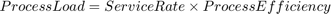

Physical Network
Contents
Edge Index Mapping
In the edge table, link is indexed by rows, which is different from the default index scheme of matlab matrix. So we add a column-index to the Edge Table.
Initialize VNF Specification
Properties
- Topology: including a NodeTable Nodes and an EdgeTable Edges.
Nodes: the fields in node table include Name, Location, Capacity, StaticCost, Load, Price.
Edges: the fields in the edge table include EndNodes, Weight, Capacity, Index, Load, Price.
- NumberNodes
- NumberEdges
- NumberSlices
- VNFTable: including following fields.
ProcessEfficiency: The coefficient for converting service rate to processing resource requirement, i.e. ;
Methods
- LoadNetworkData static : generate graph data.
graph_data = LoadNetworkData(model, link_opt, node_opt)
- LoadVNFData static : Generate virtual network function data.
VNF_data = LoadVNFData(this, number_VNF, VNF_model)
- LinkDelay static : convert bandwidth to link delay.
dt = LinkDelay(delay_opt, bandwidth)
delay_opt: enumeration type of LinkDelayOption.
bandwidth: bandwidth with unit of Mbps.
dt: delay with unit of ms.
- LinkId: link index of links in the edge table
idx = LinkId(this, s, t)
s: source nodes of links;
t: tail nodes of links;
- setLinkField: set the value for a field in the Edge Table. Link price corresponds to column indexed links, so this method is used when a column-indexed data value is provided.
setLinkField(this, name, value)
name: a character array represents the field name.
value: a column vector stores values to be set for the target field.
- getLinkField: get the value from a field in the Edge Table. See also setLinkField.
value = getLinkField(this, name)
- AddSlice : Add Slice to Substrate Network
AddSlice(phy_network, slice_opt)
slice_opt: option for the added slice;
- AllocateFlowId : Allocate flow identifier.
AllocateFlowId(phy_network)
- AllocatePathId : Allocate path identifier
AllocatePathId(phy_network)
- plot : Visualize Substrate Network and Network Slices
plot(phy_network)